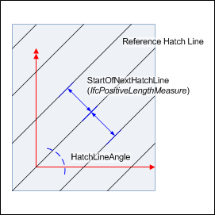
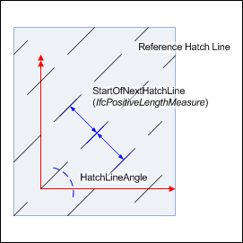
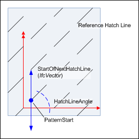
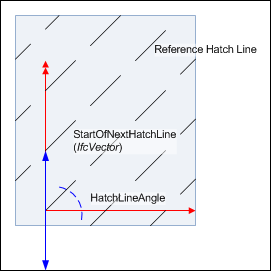
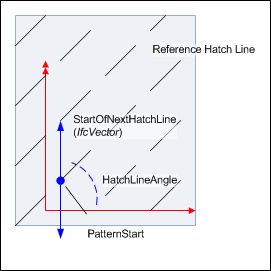
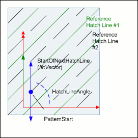

8.12.3.15 IfcFillAreaStyleHatching
| Füllfläche - Schraffurstil |
The IfcFillAreaStyleHatching is used to define simple, vector-based hatching patterns, based on styled straight lines. The curve font, color and
thickness is given by the HatchLineAppearance, the angle by the HatchLineAngle and the distance to the next hatch line by
StartOfNextHatchLine, being either an offset distance or a vector.
NOTE Definition according to ISO 10303-46:
The fill area style hatching defines a styled pattern of curves for hatching an
annotation fill area or a surface.
NOTE If the hatch pattern involves two (potentially crossing) rows of hatch lines, then two instances of
IfcFillAreaStyleHatching should be assigned to the IfcFillAreaStyle. Both share the same (virtual) point of origin of the
hatching that is used by the reference hatch line (or the PointOfReferenceHatchLine if there is an offset).
For better control of the hatching appearance, when using hatch lines with other fonts then continuous, the PatternStart allows to offset the
start of the curve font pattern along the reference hatch line (if not given, the PatternStart is at zero distance from the virtual point of
origin). If the reference hatch line does not go through the origin (of the virtual hatching coordinate system), it can be offset by using the
PatternStart .
NOTE The coordinates of the PatternStart are given relative to the origin of the object coordinate
of IfcAnnotationFillArea, or if present, the FillAreaTarget attribute of IfcAnnotationFillArea. The measure values are given in
global drawing length units, representing a model hatching, and can be translated into drawing units by the TargetScale for a scale depended
IfcGeometricRepresentationSubcontext, if provided.
DEPRECATION The use of PointOfReferenceHatchLine is deprecated.
Figure 335 illustrates hatch attributes.
 |
Example 1
This example shows simple hatching given by using a curve font "continuous" at HatchLineAppearance.
The distance of hatch lines is given by a positive length measure. The angle (here 45' if measures in degree) is provided by HatchLineAngle.
The PatternStart is set to NIL ($) in this example. |
 |
Example 2
This shows hatching from example 1 with using a different curve font at HatchLineAppearance.
The distance of hatch lines is given by a positive length
measure, therefore the font pattern start is at a point at the next hatch line
given by a vector being perpendicular to the point of origin at the reference
hatch line.
The PatternStart is set to NIL ($) in this
example. |
 |
Example 3
This example uses hatching from example 2 with a vector to determine the pattern start of the next hatch lines.
The pattern start is the beginning of the first visual curve font pattern segment at IfcCurveFont.CurveFont.
The PatternStart is set to NIL ($) in this
example.
|
 |
Example 4
This example uses hatching from example 3 where the pattern start is offset
from the point of origin at the reference hatch line. That is, the first
visible curve font pattern segment now does not start at the point of origin at
the reference hatch line.
|
 |
Example 5
This example uses hatching from example 4 where the hatch pattern is shifted
against the underlying coordinate system.
The point that is mapped to the insertion point of the
IfcAnnotationFillAreaOccurrence now has an X and Y offset from the
start of the reference hatch line. That is, the reference hatch line now does
not go through the insertion point of the hatching.
|
 |
Example 6
This example shows use of IfcFillAreaStyleHatching attributes for two IfcFillAreaStyleHatching's within one IfcFillAreaStyle.
Note that the PatternStart now displaces both the reference hatch line from the point of origin and the start of the curve pattern. This can be used
in cases when more than one IfcFillAreaStyleHatching is used in an IfcFillAreaStyle in order to place rows of hatch lines with an offset
from each other. |
|
|
Figure 335 — Fill area style hatching
|
NOTE Entity adapted from
fill_area_style_hatching defined in ISO10303-46
HISTORY New entity in IFC2x2.
IFC2x3 CHANGE The
IfcFillAreaStyleHatching has been changed by making the attributes
PatternStart and PointOfReferenceHatchLine OPTIONAL. The
attribute StartOfNextHatchLine has changed to a SELECT with the
additional choice of IfcPositiveLengthMeasure. Upward compatibility
for file based exchange is guaranteed.
IFC4 CHANGE The attribute data type
for StartOfNextHatchLine has been changed to be a select of
IfcPositiveLengthMeasure and IfcVector.
XSD Specification:
<xs:element name="IfcFillAreaStyleHatching" type="ifc:IfcFillAreaStyleHatching" substitutionGroup="ifc:IfcGeometricRepresentationItem" nillable="true"/>
<xs:complexType name="IfcFillAreaStyleHatching">
<xs:complexContent>
<xs:extension base="ifc:IfcGeometricRepresentationItem">
<xs:sequence>
<xs:element name="HatchLineAppearance" type="ifc:IfcCurveStyle" nillable="true"/>
<xs:element name="StartOfNextHatchLine">
<xs:complexType>
<xs:group ref="ifc:IfcHatchLineDistanceSelect"/>
</xs:complexType>
</xs:element>
<xs:element name="PointOfReferenceHatchLine" type="ifc:IfcCartesianPoint" nillable="true" minOccurs="0"/>
<xs:element name="PatternStart" type="ifc:IfcCartesianPoint" nillable="true" minOccurs="0"/>
</xs:sequence>
<xs:attribute name="HatchLineAngle" type="ifc:IfcPlaneAngleMeasure" use="optional"/>
</xs:extension>
</xs:complexContent>
</xs:complexType>
EXPRESS Specification:
|
ENTITY IfcFillAreaStyleHatching
|
|
|
| PatternStart2D | : | NOT(EXISTS(PatternStart)) OR (PatternStart.Dim = 2)
; | | RefHatchLine2D | : | NOT(EXISTS(PointOfReferenceHatchLine)) OR (PointOfReferenceHatchLine.Dim = 2); |
|
 EXPRESS-G diagram
EXPRESS-G diagram
Attribute Definitions:
| HatchLineAppearance | : | The curve style of the hatching lines. Any curve style pattern shall start at the origin of each hatch line. |
| StartOfNextHatchLine | : | A repetition factor that determines the distance between adjacent hatch lines. The factor can either be defined by a parallel offset, or by a repeat factor provided by IfcVector.
IFC2x3 CHANGE The attribute type of StartOfNextHatchLine has changed to a SELECT of IfcPositiveLengthMeasure (new) and IfcOneDirectionRepeatFactor.
IFC4 CHANGE The attribute type of StartOfNextHatchLine has changed to a SELECT of IfcPositiveLengthMeasure (new) and IfcVector.
|
| PointOfReferenceHatchLine | : |
A Cartesian point which defines the offset of the reference hatch line from the origin of the (virtual) hatching coordinate system. The origin is used for mapping the fill area style hatching onto an annotation fill area or surface. The reference hatch line would then appear with this offset from the fill style target point.
If not given the reference hatch lines goes through the origin of the (virtual) hatching coordinate system.
IFC2x3 CHANGE The usage of the attribute PointOfReferenceHatchLine has changed to not provide the Cartesian point which is the origin for mapping, but to provide an offset to the origin for the mapping. The attribute has been made OPTIONAL.
|
| PatternStart | : |
A distance along the reference hatch line which is the start point for the curve style font pattern of the reference hatch line.
If not given, the start point of the curve style font pattern is at the (virtual) hatching coordinate system.
IFC2x2 Add2 CHANGE The attribute PatternStart has been made OPTIONAL.
|
| HatchLineAngle | : | A plane angle measure determining the direction of the parallel hatching lines. |
Formal Propositions:
| PatternStart2D | : | The IfcCartesianPoint, if given as value to PatternStart shall have the dimensionality of 2.
|
| RefHatchLine2D | : | The IfcCartesianPoint, if given as value to PointOfReferenceHatchLine shall have the dimensionality of 2.
|
Inheritance Graph:
|
ENTITY IfcFillAreaStyleHatching
|
 Link to this page
Link to this page